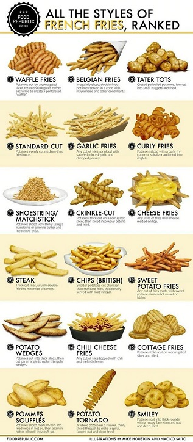
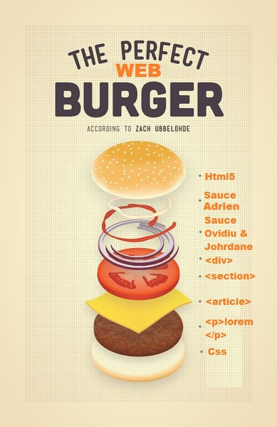
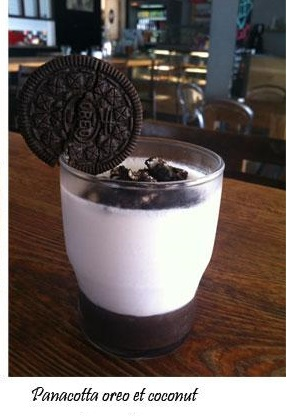
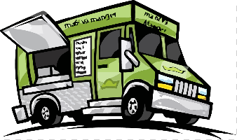

menu
La « frite » est un bâtonnet de pomme de terre cuit dans une graisse animale ou une huile végétale (friture). Les appellations pomme frite et patate frite sont utilisées indifféremment pour ce bâtonnet, pour une tranche ou pour une rondelle du même végétal cuit de cette façon.
La cuisson à la poêle ou en marmite tend à disparaître dans les ménages au xxe siècle au profit d'un appareil électroménager appelé friteuse. Vers 2010, un panier de cuisson permettant la cuisson au four avec un minimum de matière grasse apparait dans le commerce pour une cuisson plus diététique. Il existe aussi des frites dans un emballage spécial pour cuisson au four à micro-ondes1.
Au début du xxie siècle, la plupart des frites consommées dans le monde sont des frites surgelées produites industriellement, commercialisées soit directement dans la grande distribution ou les chaînes spécialisées dans les produits surgelés, soit dans les restaurants (en particulier dans les chaînes de restauration rapide)..


Boissons
L'eau et les boissons que nous consommons mettent en jeu des fonctions de notre corps, réelles ou imaginaires. On se désaltère, se rafraîchit, se purifie, se calme, se régénère, se reconstitue, se tonifie ... en buvant. La boisson est un allié autant de notre physique que de notre mental. Mais si boire est aussi vital que respirer, l'histoire montre que nous ne buvons pas telle ou telle boisson par hasard. Elle nous apprend que chaque boisson est née pour répondre à un usage précis où les préoccupations de santé ont joué, et jouent toujours, un rôle déterminant.


Contact
Ma 6-T Va Manger est implanté depuis plus de 28 ans en pied de barre au cœur du quartier populaire de La Caravelle de Villeneuve-la-Garenne. Notre association a acquis au fil du temps une expertise en matière de développement d’activités économiques et de création d’emplois principalement à destination des résidents des quartiers qui sont confrontés à des difficultés d’intégration socioprofessionnelle. Par son action et sa participation au débat public, Ma 6-T Va Manger tente de démontrer depuis des années que l’économie sociale et solidaire peut être vecteur de développement et de repas web pour les quartiers si elle est dotée de bon cerveaux et de moyens financiers et humains qui lui permettent de ne pas rester une simple variable d’ajustement des politiques économiques.
